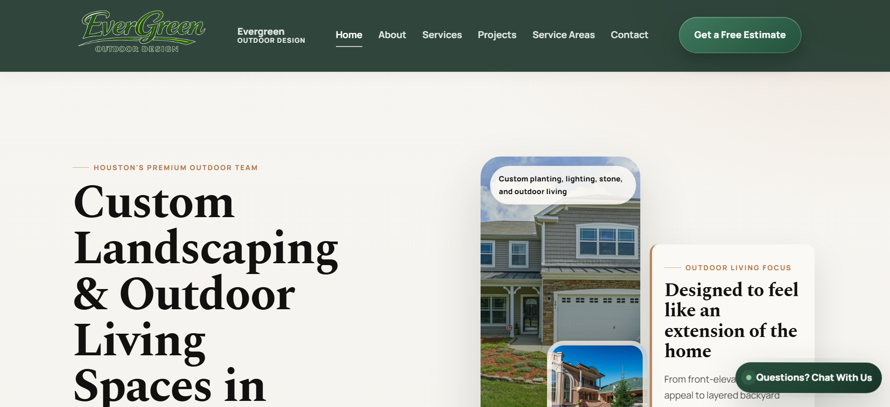

Website proof
Work / Case Studies
Website examples framed around business value: clear presentation, easier navigation, service-led sections, and contact paths that are simple to find.
Website Examples


Landscaping Website
A modern website example for a landscaping company with service-led sections, a cleaner layout, and a stronger first impression for potential customers.

Want a website like this?
Tell me what kind of business you run and what your website needs to help customers understand or do.
Start a Website Project